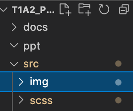
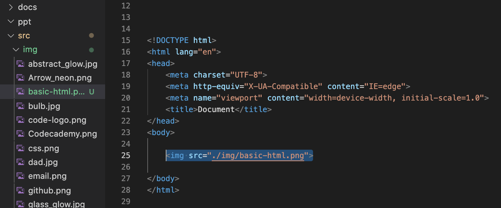

BLOG
Basic HTML
Create your first image link
Lets get you started by creating the directory folder [IMG]

Start of by creating a new directory and giving it a name of img (This will be a container for all the imgages you add to the site.
Once you have created the directory simply drag or import the jpg,png, file into the folder.
Now lets get the image onto the page!!!
To create a link you need to create a tag to wrap the image, the tag only needs to be closed with a >
Now lets code... add the below inside the body tag
img scr="./yourimagename.jpg" make sure your wrap it with < add it here >
Congrats, you have added your very first img to your site